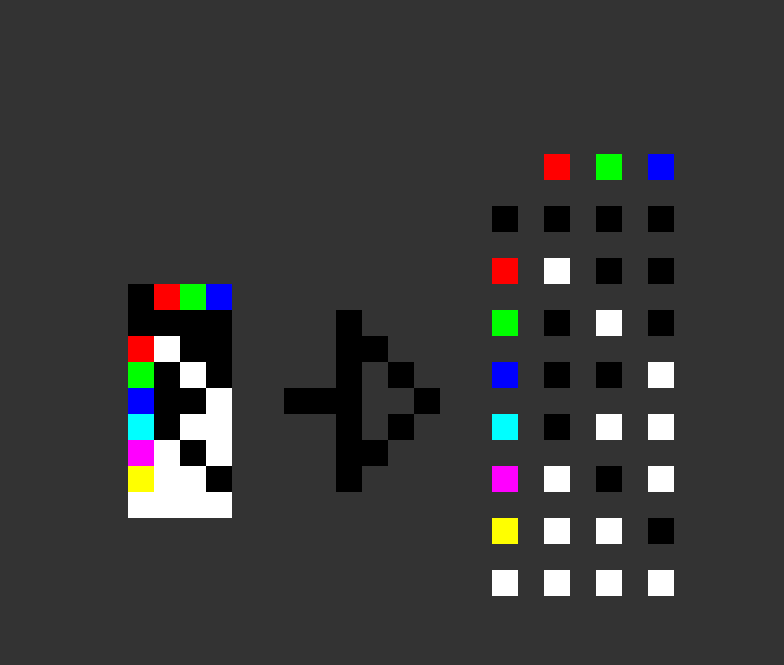
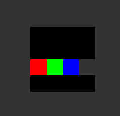
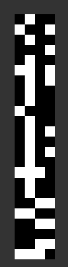
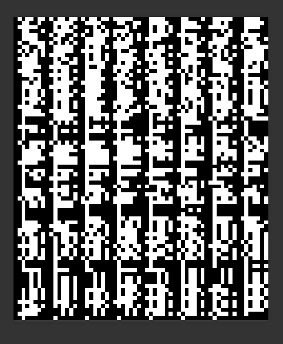

While no events played out during this day nor was the narrative advanced any further, something important has happened. On April 1, we have decoded the Puppeteer’s encodings.
Early on, Narcolept and Tikaro have received the following image from the Puppeteer, sent via DMs (#90, right half):
It was a copy of the previous small encoding, only with a different hint this time. The hint was quickly analyzed: at a first glance, it was a map of all of the colors from the encodings to their RGB components.
We have quickly realized that the Puppeteer wanted us to isolate RGB channels of the encodings and stitch them back together, now as black-and-white strips only. This only left one question — what to do with the black-and-transparent mask which both the main encoding and this small one had?
The second part of the hint on this new version of the small encoding gave us the answer:
While at first sight it’s just 4 pixels, this was actually the rule with which we had to order the isolated channels to decode the image successfully. We had red, green, and blue channels. The missing one? Black-and-transparent.
Upon this realization, the small encoding was quickly cracked. The image produced looked like this:
And the information within was: IAMTHEEND<0> What did it mean? This we would understand upon decoding the main image.
The information we now had about the encoding process was enough to crack the big one. There was a single bump in the road — in the main encryption, not the whole RGB channels had to be stitched together in the “Red, Green, Blue, Transparent” order, but rather each channel had to be cut into pixel-wide vertical strips, and those strips had to be repeated in the right order. This produced an image seen below:
What we uncovered was not a poem, nor a readable piece of text. It was another cryptic string of characters, holding a lot of information in a very compact way (it's also really wide, scroll to the right to see the end):
[[[|<1><2><3><4>|-
->|<1>-x-
<YOU>|&|<2>-x-<YOU>| &|<3>-x-<YOU>|&|<4>-x-<YOU>|-->|<2><3>--><5>|&|<4>-x-<YOU>|>|<4>-
->x|&|<6>|----->|<1><4>--><7>|-->|<5>--><8>|----->|<7>-x-<YOU>|>|<7>-->???|&|<8 >-x-<YO U > | - - - -->|<8> -x-<YOU>|----->|???<7>???|-?->|???<7>???|-?->|???
<7>???|----->|<>|&|< 8>-x -<YOU
>|>
|<8>-->x|>|[1]|----->||???-->
<7>|>|<7>--><9>|----->|<9>-x-<YOU>|----->...----->|[2]|&|[3]|------------>|[1][2][3]-- -><0>|-
-
-
-
-
-
-
-
-
-
-
-
>|<0>-->...|------------>|<0>x<>|------------>
|<0>|
]]]Now, what exactly were we looking at? We were certain it was the correct decoding — it looked too ordered to be gibberish, and there were <YOU> symbols popping up everywhere.
The first step towards understanding the decoded information was to parse it. We weren’t sure what it was supposed to mean, but we did see that there was a lot of whitespace character noise in it. So, first thing we did was get rid of them. Narcolept had also conveniently split it at every arrow:
[[[
|<1><2><3><4>|
-->|<1>-x-<YOU>|&|<2>-x-<YOU>|&|<3>-x-<YOU>|&|<4>-x-<YOU>|
-->|<2><3>--><5>|&|<4>-x-<YOU>|
>|<4>-->x|&|<6>|
----->|<1><4>--><7>|
-->|<5>--><8>|
----->|<7>-x-<YOU>|
>|<7>-->???|&|<8>-x-<YOU>|
----->|<8>-x-<YOU>|
----->|???<7>???|
-?->|???<7>???|
-?->|???<7>???|
----->|<>|&|<8>-x-<YOU>|
>|<8>-->x|
>|[1]|
----->||???--><7>|
>|<7>--><9>|
----->|<9>-x-<YOU>|
----->...
----->|[2]|&|[3]|
------------>|[1][2][3]—><0>|
------------>|<0>-->...|
------------>|<0>x<>|
------------>|<0>|
]]]Now this was beginning to look as it had some meaning. <YOU> was the element that caught our attention immediately. The first interpretation, and the one we used ever since was that <YOU> meant “server members that participated in the Puppeteer’s story”.
This, in turn, gave Ensign an idea that <#> elements could be referring to the puppets we have been encountering. If he was right, line -->|<1>-x-<YOU>|&|<2>-x-<YOU>|&|<3>-x-<YOU>|&|<4>-x-<YOU>| was referring to us fighting and beating the four original puppets. From here we could gather that |<1>-x-<YOU>| meant “<puppet 1> encountered/killed by <us>”
Going with this idea, the very first line |<1><2><3><4>| meant that the original four puppets made their appearance. A “declaration of variables” of sorts.
We then observed that |<2><3>--><5>| likely signified Lone Darkwraith and Redflame Erik being stitched together into Wraithflame Erik.
Now, if the first four puppets had their tokens/variables start counting at 1, what did <0> mean? Remember IAMTHEEND<0>? Extremely obvious that <0> was the final puppet, and the whole string of information was detailing the Father’s plan to make it.
We were excited to uncover so much information. Quickly, we have started to meticulously go through what would now be referred to as the Timeline, and interpret every line, checking it against the real-life chronology of the Puppeteer’s events we have been keeping updated.
And it was lining up. -->|<2><3>--><5>|&|<4>-x-<YOU>| meant “[Lone Darkwraith and Redflame Erik made into Wraithflame Erik] AND [White Vagrant fought us]” Subsequently, >|<4>-->x|&|<6>| was interpreted as “[White Vagrant died] AND [Heart of Spears appeared]” We won’t write out interpretations of each line here, they will all be at the end of this section neatly formatted. Now, let’s focus on what we already understood about the Timeline and what we were yet to figure out. Having quickly cross-referenced our document with it, we were able to determine which tokens belong to which puppets. Thus, a much more readable version of the Timeline came to be:
[[[
|<Oden the Armless><Redflame Erik><Lone Darkwraith><White Vagrant>|
-->|<Oden the Armless>-x-<YOU>|
&|<Redflame Erik>-x-<YOU>|
&|<Lone Darkwraith>-x-<YOU>|
&|<White Vagrant>-x-<YOU>|
-->|<Redflame Erik><Lone Darkwraith>--><Wraithflame Erik>|
&|<White Vagrant>-x-<YOU>|
>|<White Vagrant>-->x|
&|<Heart of Spears>|
----->|<Oden the Armless><White Vagrant>--><Slumbering Oden>|
-->|<Wraithflame Erik>--><Nameless Flame>|
----->|<Slumbering Oden>-x-<YOU>|
>|<Slumbering Oden>-->???
|&|<Nameless Flame>-x-<YOU>|
----->|<Nameless Flame>-x-<YOU>|
----->|???<Slumbering Oden>???|
-?->|???<Slumbering Oden>???|
-?->|???<Slumbering Oden>???|
----->|<>
|&|<Nameless Flame>-x-<YOU>|
>|<Nameless Flame>-->x|
>|[1]|
----->||???--><Slumbering Oden>|
>|<Slumbering Oden>--><Lord of Hail>|
----->|<Lord of Hail>-x-<YOU>|
----->...
----->|[2]|&|[3]|
------------>|[1][2][3]—><0>|
------------>|<0>-->...|
------------>|<0>x<>|
------------>|<0>|
]]]Everything was beginning to take shape. There were, however, several more things we did not understand in its syntax.
A realization struck us that the arrows at the start of each line had variable lengths. We never gave it much thought afterwards, but the general consensus was that it meant different periods of time between the events.
First puzzling part was |[1]|. The puppet tokens were written with angle brackets, not with square ones. The first idea was that they meant “first ascended puppets”. <1> was Oden the Armless’ token, so [1] would refer to Lord of Hail, right? Sadly, this was not the case, as it did not hold up with <2> and <3> — Lone Darkwraith’s and Redflame Erik’s tokens, respectively. We knew they became a single being in face of the Nameless Flame, so they could not possibly occupy [2] and [3].
We saw line |<Nameless Flame>-->x|>|[1]|, which was the last time we saw Nameless Flame in the Timeline. What happened to the Nameless Flame after we killed it? We obtained the Humanity. So the next, (and this time correct), interpretation was that [#] Father’s precious resources.
Next, ----->.... This was quickly decided to be the “current place in the timeline”, as of April 1. This made sense and lined up with what we have documented.
Here we ran into a slight problem: we have just killed Heart of Spears and obtained its Vessel (which was expected to be [2], yet there was nothing like |<Heart of Spears>-->x|>|[2]| in the Timeline. (Note: upon writing this final version of the Puppeteer story’s chronology it appears that the line — -->|[2]|&|[3]| refers exactly to that — “[[2] obtained] and [[3] obtained]” with [2] and [3] being precious resources extracted from Heart of Spears and Lord of Hail respectively).
Having parsed and interpreted everything up until the “current place”, we have come to the juiciest part. The Timeline did not end there, but kept going, telling us of the future we were yet to see.
— — — — >|[1][2][3] — ><0>| meant “Puppet <0> made from [The Humanity], [Heart’s Vessel], [Lord of Hail’s resource]”
— — — — >|<0>-->...| was interpreted as “Puppet <0> UNKNOWN ACTION”
— — — — >|<0>x<>| read “Puppet <0> fought(?) <>” (Final edit note: this turned out to be more like “Puppet <0> CONSUMED <>”).
— — — — >|<0>| at last meant “Puppet <0> remained”.
And here, the Timeline ended, meaning that the mysterious puppet <0> was the final thing we would see in this story.
There was however one last question to be answered: what was the <>? We have pondered on it for a while, with several suggestions. It could have meant the Father himself, or some other yet unknown entity. What we knew was that it appeared right before the first time we saw the Nameless Flame. But there was nothing aside from a 1-hour break between the Slumbering Oden’s only event and the Nameless Flame’s first appearance.
As we have realized much later, <> was indeed an entity. A nameless “puppet” of sorts. Not Father’s puppet, but rather the puppet of the world, playing on the stage of the Age of Fire and keeping it safe. It was the Great Old Sin, first mentioned precisely right before Nameless Flame’s first appearance.
With this, there was nothing more to discover in the Timeline. If you want to see the whole timeline with a line-by-line description, check Appendix D.